特性
EtherCAT（以太网控制自动化技术）是一个以以太网为基础的开放架构的现场总线系统，EtherCAT名称中的CAT为Control Automation Technology（控制自动化技术）首字母的缩写。最初由德国倍福自动化有限公司(Beckhoff Automation GmbH) 研发。EtherCAT为系统的实时性能和拓扑的灵活性树立了新的标准，同时，它还符合甚至降低了现场总线的使用成本。EtherCAT的特点还包括高精度设备同步，可选线缆冗余，和功能性安全协议(SIL3)。
性能
| 过程数据 | 更新时间 |
|---|---|
| 265 个分布式数字 I/O 量 | 11 us ＝ 0.01 ms |
| 1000 个分布式数字 I/O 量 | 30 us |
| 200 个 16 位的模拟 I/O 量 | 50 us <–> 20 kHz |
| 100 个包含 8 字节输入输出数据的伺服轴 | 100 us |
| 1 个现场总线网关（1486 字节的输入和 1486字节的输出数据） | 150 us |
ISO/OSI 模型
在标准以太网的七层 OSI 模型中 EtherCAT 只定义了物理层、数据链路层和应用层这三层协议（如下图）。
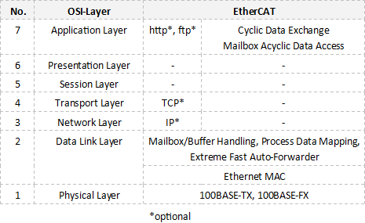
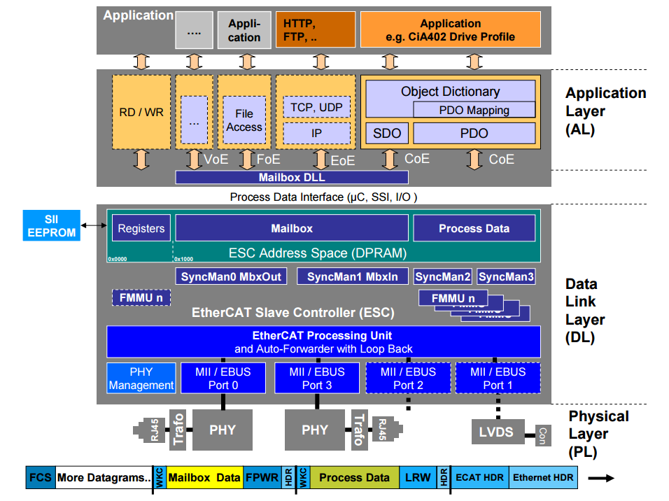
网络组成
EtherCAT 是主从式的结构。
主站
EtherCAT 主站使用标准的以太网 MAC。
从站
EtherCAT 从站需要使用特殊的硬件芯片（EtherCAT Slave Controller）来达到微秒级周期时间的实时性能。从站不需要微处理器就可以实现 EtherCAT 通信。可以通过 I/O 接口实现的简单设备可以只由 ESC 和其下的 PHY，变压器和 RJ45 接头组成。给从站的过程数据接口是32位的I/O接口。这种从站没有可配置的参数，所以不需要软件或邮箱协议。更复杂的可配置从站有使用一个微处理器。
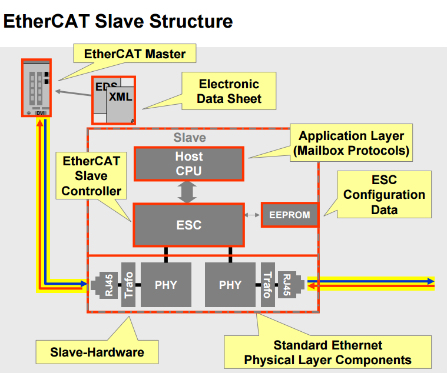
在报文经过从站时， ESC 从报文中提取发送给自己的输出命令数据并将其存储到内部存储区，输入数据从内部存储区又被写到相应的子报文中。数据的提取和插入都是由数据链路层硬件完成的。
- 从站可以最多有 4 个 EtherCAT 端口。
- 如果有一个端口是关闭的，那么控制器会自动转发到下一个端口。端口可以由连接自动打开或关闭，写可以通过 EtherCAT 命令修改。
- EtherCAT 帧处理和转发顺序由逻辑端口配置（如下图）。
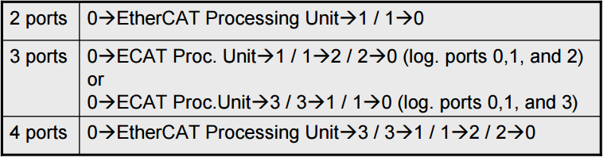
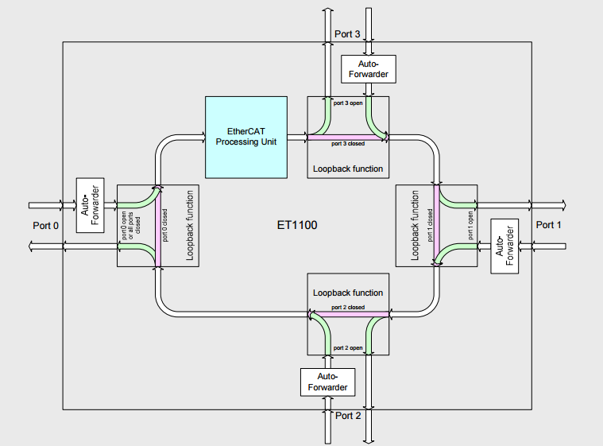
拓扑结构
EtherCAT 支持几乎所有拓扑结构。因此，源于现场总线的总线形结构也可用于以太网。将总线和分支结构相结合特别有助于系统布线。所有接口都位于耦合器上，无需使用附加交换机。
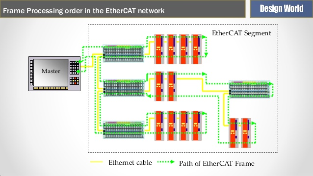
黄色的实线为以太网线缆，绿色虚线为 EtherCAT 帧的路径。
所有的数据帧都被第一个从站设备转发到后续的节点，最后一个从站设备将数据帧返回到主站。
节点个数
EtherCAT 网络最多可以连接 65535 个设备。
寻址方式
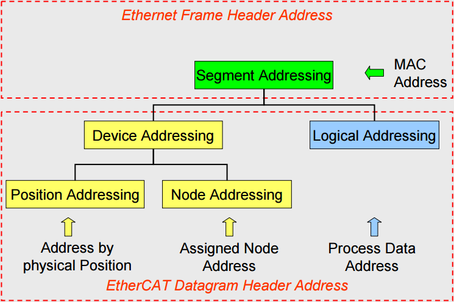
如上图，一个 EtherCAT 网段相当于一个以太网设备，主站首先使用以太网数据帧头的 MAC 地址寻址到网段，然后使用 EtherCAT 子报文头中的地址寻址到段内设备。
网段寻址
直接模式（无交换机）
一个 EtherCAT 网段直接连接到主站设备的标准以太网口（如下图），此时主站使用广播 MAC 地址寻址，帧报文中目的 MAC 地址为 FF-FF-FF-FF-FF-FF。
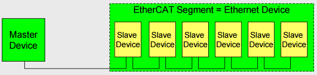
开放模式
EtherCAT 网段连接到以太网交换机上（如下图），我们就有多个网段，此时每个网段都需要一个 MAC 地址，主站发送的 EtherCAT 数据帧中目的地址是它所控制的网段的 MAC 地址。
EtherCAT 网段中第一个从站设备有一个 ISO/IEC 8802.3 的 MAC 地址，这个地址表示了整个网段，这个从站称为段地址从站，它能够交换帧内的目的地址区和源地址区。
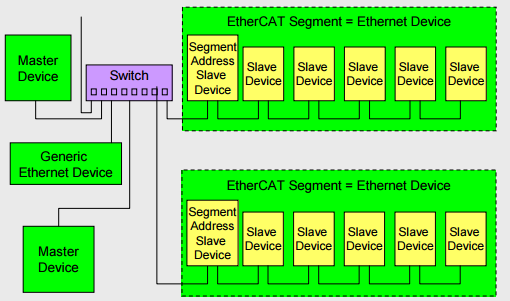
段内寻址
段内寻址指的是当我们寻址到一个网段中后，改网段中的具体的设备如何寻址，EtherCAT 有以下几种方式。
自增量寻址（Auto Increment Addressing）
自增量寻址必须只能在 EtherCAT 系统启动的时候用来扫描总线或者偶尔检测到新设备的时候。在经过自增量寻址之后主站会给每个从站分配一个固定的地址，以便用于固定地址寻址。
特点：
- 每个从站根据位置分配一个十六位的负数自增量地址.
- 当所读取的从站地址等于零时将被处理。
- 每次从站地址加一
- 偏移地址存储在设备的内存空间中。
- 通常用于扫描硬件的配置信息。
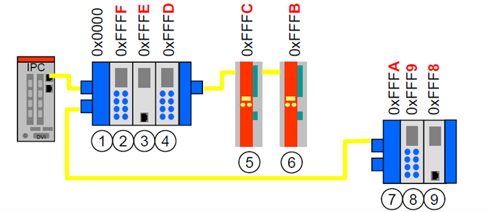
固定寻址（Fixed Addressing）
固定地址寻址一般用于主站与从站以邮箱方式的通信中（非周期性数据通信在 EtherCAT 中称为邮箱数据通信），在邮箱方式通信的时候 EtherCAT 主站根据从站的固定地址寻址到所要交换数据的从站，数据只在两者之间进行交换，适用于主站与某一个从站交换相对较大的数据。
特点：
- 每个从站有一个固定的地址（16 bit 所以最大节点数为 65535）
- 通常在硬件配置扫描的过程中被分配。
- 与从站的位置无关
- 当断电后固定地址丢失
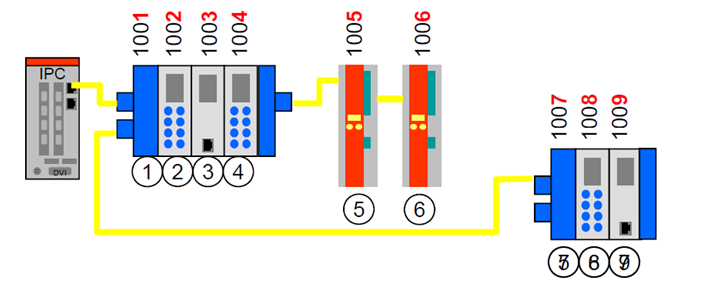
逻辑寻址（Logical Addressing）
逻辑寻址一般用在过程数据的通信过程中（周期性），每个从站的物理地址通过 FMMU（Fieldbus Memory Management Unit） 被映射到一个指定的逻辑地址当中。这样做的好处是主站想要操作某一个从站时可以只操作固定的逻辑地址而不必知道所操作的逻辑地址所对应的从站地址，这样就大大减轻了控制系统的负担，加快了相应的速度。
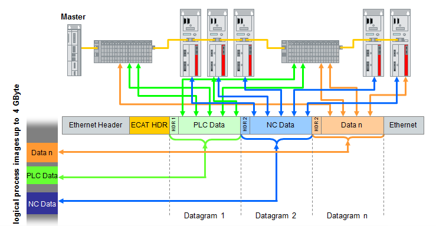
其他
EtherCAT 设备可以有两个配置的地址，一个是由主站分配（Configured Station Address），另一个是存储在 ESC EEPROM 中并且能由从站应用改写（Configured Station Alias Address）。主站分配的地址从站不能修改，存储在 EEPROM 中的地址只在第一次上电或者复位的时候装载。
EtherCAT 主站一开始通过自增量寻址访问各个从站并分配固定地址，接下来通过固定寻址访问配置寄存器（非周期性），通过逻辑寻址访问过程数据（周期性）。
高可靠性、冗余
仅需在主站设备端增加使用一个标准的以太网端口（无需专用网卡或接口），并将单一的电缆从总线型拓扑结构转变为环型拓扑结构即可增加冗余特性（见下图）。当设备或电缆发生故障时，也仅需一个周期即可完成切换。因此，即使是针对运动控制要求的应用，电缆出现故障时也不会有任何问题。EtherCAT也支持热备份的主站冗余。由于在环路中断时EtherCAT从站控制器芯片将立刻自动返回数据帧，一个设备的失败不会导致整个网络的瘫痪。例如，拖链设备可以配置为分支拓扑以防线缆断开。
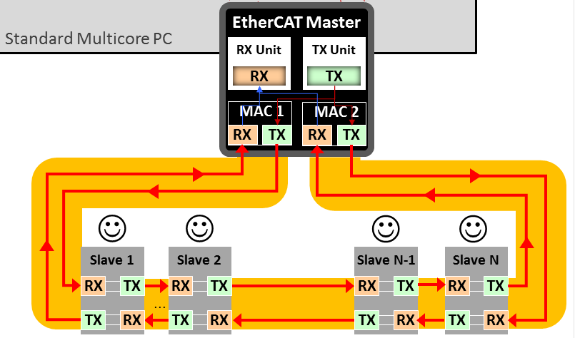
存储同步管理（SyncManager）
ESC 使用了存储同步管理通道 SM（SyncManager）来保证主站与本地应用数据交换的一致性和安全性，并在数据状态改变时产生中断来通知对方。SM 通道把存储空间组织为一定大小的缓存区，由硬件控制对缓存区的访问。缓存区的数量和数据交换方向可配置。SM 由主站进行配置，
必须从起始地址开始操作一个缓存区，否则操作被拒绝。操作其实地址后，就可以操作整个缓存区。允许再次操作其实地址，并且可以分多次操作。操作缓存区的结束地址表示缓存区操作结束，随后缓存区状态改变，同时可以产生一个中断信号或看门狗触发脉冲。不允许在一个数据帧内两次操作结束地址。
EtherCAT 定义了两种 SM 运行模式：
1）缓存类型（常用于过程数据通信）
- 使用 3 个缓存区保证可以随时接收和交付最新的数据；
- 经常有一个可写入的空闲缓存区；
- 在第一次写入之后，经常有一个连续可读的数据缓存区。
2）邮箱类型
- 使用一个缓存区，支持握手机制；
- 对数据溢出产生保护；
- 只有写入新数据才可以进行成功的读操作；
- 只有成功读取之后才允许再次写入。
P65
现场总线内存管理单元（FMMU）
逻辑寻址时，从站地址并不是单独定义的，而是使用寻址段内 4 GByte 逻辑地址空间中的一段区域。报文内的 32 位地址区作为整体的数据逻辑地址完成设备的逻辑寻址。
逻辑寻址由 FMMU 实现，FMMU 功能位于每个 ESC 内部，将从站本地物理存储地址映射到网段内逻辑地址。
FMMU 单元由主站设备配置，并在数据链路启动过程中传送给从站设备。
| FMMU 配置寄存器 | 数值 |
|---|---|
| 数据逻辑起始地址 | 0x00014711 |
| 数据长度（字节数，按跨字节计算） | 2 |
| 数据逻辑起始位 | 3 |
| 数据逻辑终止位 | 0 |
| 从站物理内存起始地址 | 0x0F01 |
| 物理内存起始位 | 1 |
| 操作类型（1：只读，2：只写，3：读写） | 2 |
| 激活（使能） | 1 |
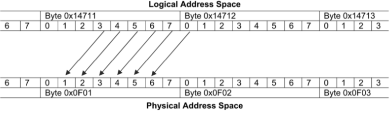
从站设备收到一个数据逻辑寻址的 EtherCAT 子报文时，检查是否有 FMMU 单元地址匹配。如果有，它将输入类型数据插入到 EtherCAT 子报文数据区的对应位置，以及从 EtherCAT 子报文数据区的对应位置抽取输出类型数据。使用逻辑寻址可以灵活地组织控制系统，优化系统结构。逻辑寻址方式特别适用于传输或交换周期性过程数据。 FMMU 操作具有以下功能特点：
- 每个数据逻辑地址字节只允许被一个 FMMU 读和另一个 FMMU 写操作，或被同一个 FMMU 进行读写交换操作；
- 对一个逻辑地址的读写操作与使用一个 FMMU 读和另一个 FMMU 写操作具有相同的结果；
- 按位读写操作不影响报文中没有被映射到的其他位，因此允许将几个从站 ECS 中的位数据映射到主站的同一个逻辑字节；
- 读写一个未配置的逻辑地址空间不会改变其内容。
分布时钟（Distributed Clock）
分布时钟可以使所有 EtherCAT 设备使用相同的系统时钟，从而控制各设备任务的同步执行。从站设备可以根据同步的系统时间产生同步信号，用于中断控制或触发数字量输入输出。支持分布式时钟的从站称为 DC 从站。分布式时钟具有以下功能：
- 实现从站之间时钟同步；
- 为主站提供同步时钟；
- 产生同步的输出信号 SYNC；
- 为输入事件产生精确的时间标记；
- 产生同步的中断；
- 同步更新数字量输出；
- 同步采用数字量输入。
描述
分布时钟机制使所有的从站都同步于一个参考时钟。主站连接的第一个具有分布时钟功能的从站作为参考时钟，以参考时钟来同步其他设备和主站的从时钟。为了实现精确的时钟同步控制，必须测量和计算数据传输延时和本地时钟偏移，并补偿本地时钟的漂移。同步时钟涉及到如下 6 个时间概念：
系统时间
系统时间是分布时钟使用的系统计时。系统时间从 2000 年 1 月 1 日零点开始，使用 64 位二进制变量表示，单位为纳秒（ns），最大可以计时 500 年。也可以使用 32 位二进制变量表示，32 位时间值最大可以表示 4.2 s，通常用于通信和时间标记。
参考时钟和从时钟
EtherCAT 协议规定主站连接的第一个具有分布时钟功能的从站作为参考时钟，其他从站的时钟称为从时钟。参考时钟被用于同步其他从站设备和主站时钟。参考时钟提供 EtherCAT 系统时间。
主站时钟
EtherCAT 主站也具有计时功能，称为主站时钟。主站时钟可以在分布时钟系统中作为从时钟被同步。在初始化阶段，主站可以按照系统时间的格式发送主站时间给参考时钟从站，使分布时钟使用系统时间计时。
本地时钟、其初始偏移量和时钟漂移
每一个 DC 从站都有本地时钟，本地时钟独立运行，使用本地时钟信号计时。系统启动时，各从站的本地时钟和参考时钟之间有一定的差值，称为时钟初始偏移量。在运行过程中，由于参考时钟和 DC 从站时钟使用各自的时钟源等原因，它们的计时周期存在一定的漂移，这将导致时钟运行不同步，本地时钟产生漂移。因此，必须对时钟初始偏移和时钟漂移都进行补偿。
本地系统时间
每个 DC 从站的本地时钟经过补偿和同步之后都产生了一个本地系统时间，分布时钟同步机制就是使各个从站的本地系统时间保持一致。参考时钟也是相应从站的本地系统时钟。
传输延时
数据帧在从站时间传输时会产生一定的延时。其中包括设备内部和物理连接延时。所以在同步从时钟时，应该考虑参考时钟与各个从时钟之间的传输延时。
TBD
FMMU EtherCAT 帧解析 EtherCAT 命令 应用层协议 分布式时钟\如何同步IO 模块化的设备概要文件 syncmanager7683
参考：
- EtherCAT communication
- EtherCAT - 以太网现场总线
- 《工业以太网现场总线 EtherCAT 驱动程序设计及应用》- 郇极、刘艳红